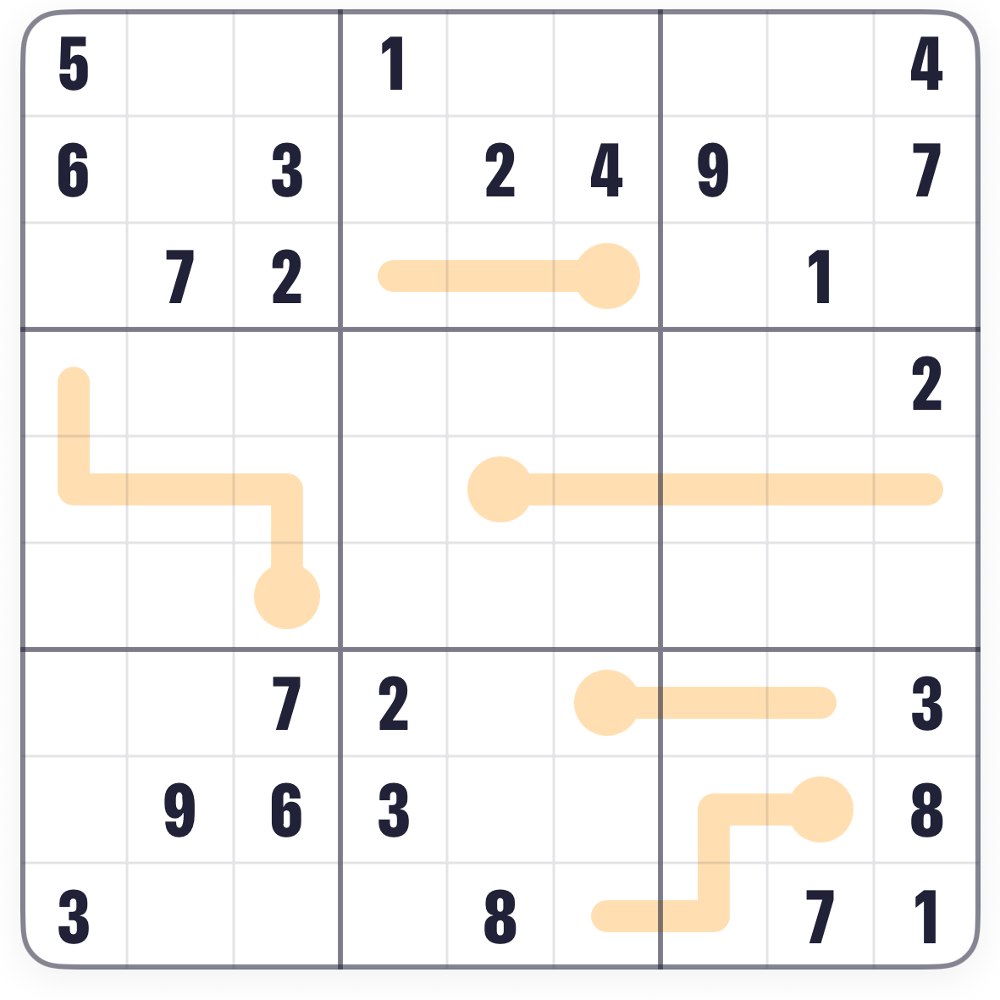
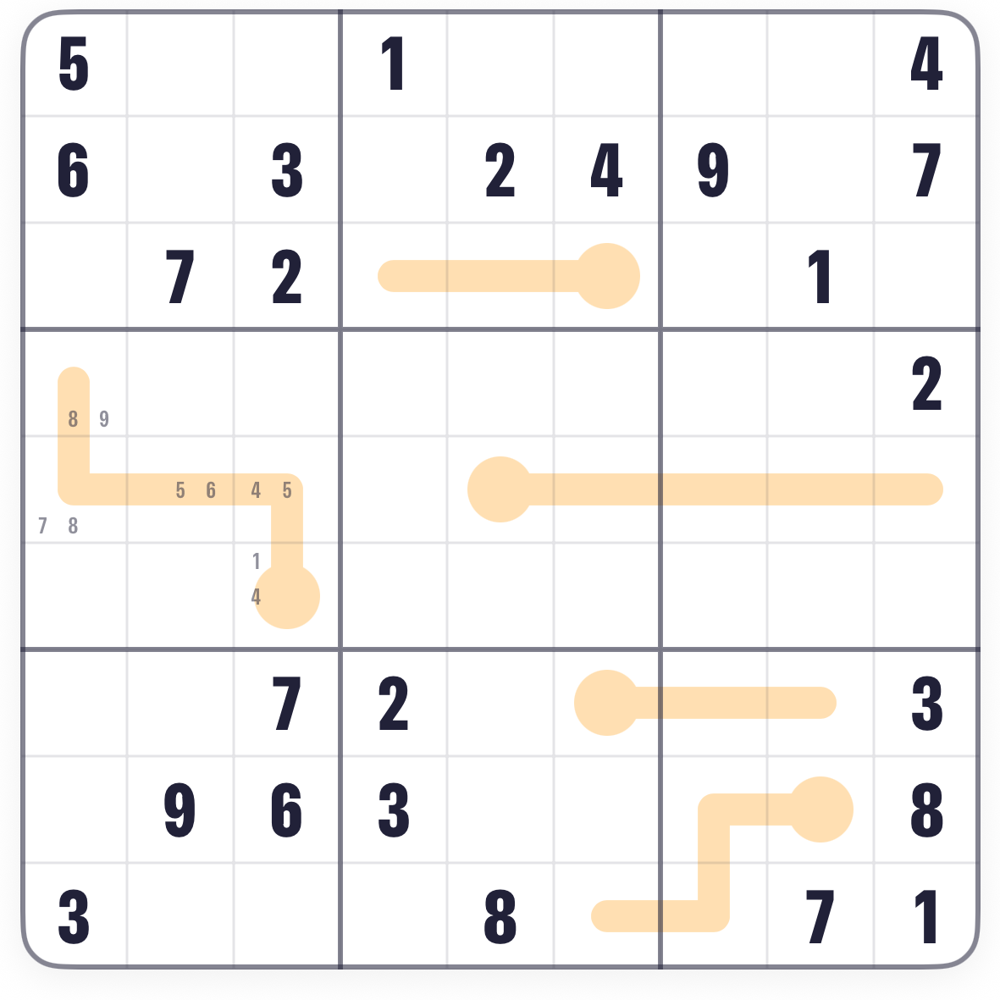
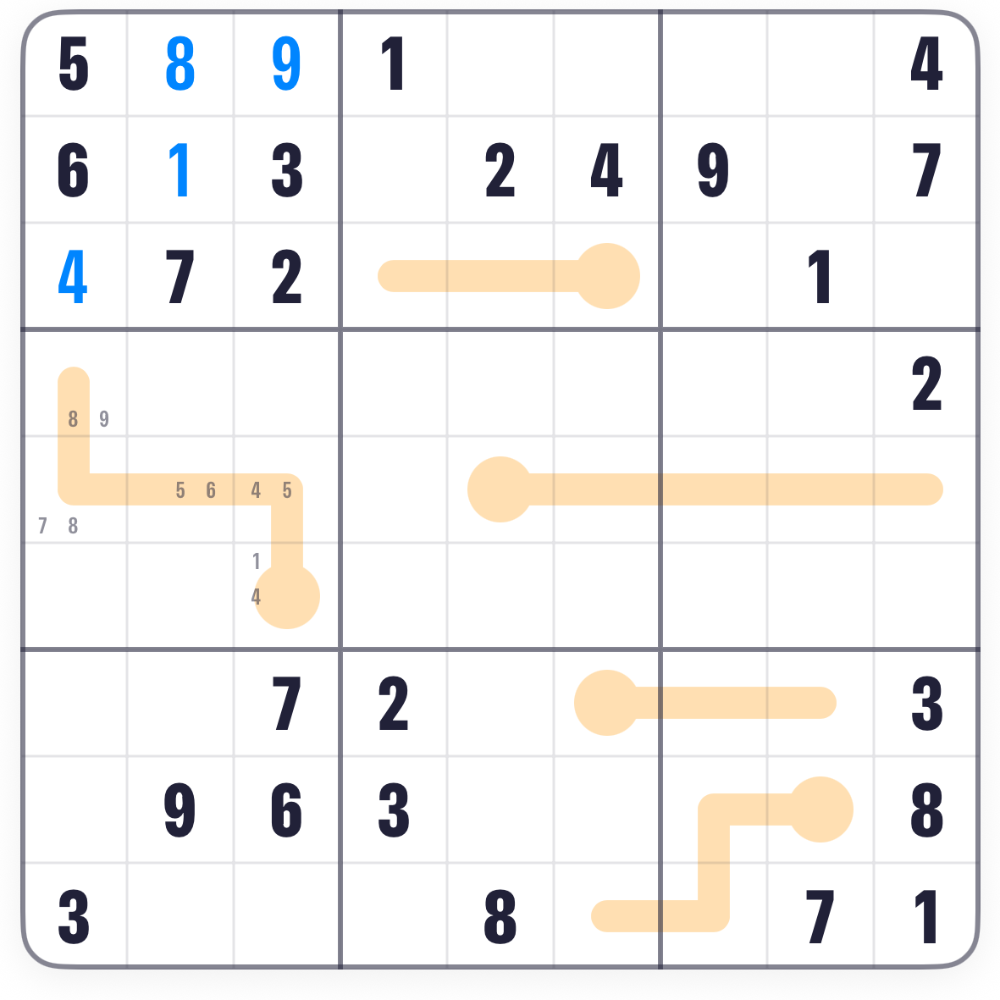
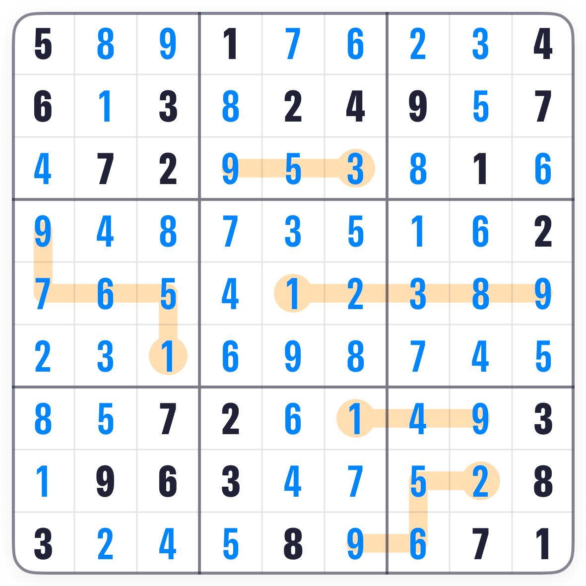

How to play Thermo Sudoku.
Thermo is Sudoku with thermometers drawn across the grid. Every Sudoku rule still holds, and one more joins it: along each thermometer, the digits get bigger from the round bulb to the tip. Fewer givens, and the thermometers do the rest.
The board.
A normal 9 by 9 Sudoku with thermometers laid over it. Each one starts at a round bulb and runs along a line of squares to its tip, bending where it likes. This board has five, and fewer givens than a classic board, because the thermometers are clues too.

The rule.
Bigger, not next: 2 then 5 then 9 is fine. Only strictly increasing matters. Nothing on a thermometer can repeat, and the bulb is always the smallest square on its line.
Reading a thermometer.
A thermometer with five squares needs five different digits in order, so its bulb can be at most 5 and its tip at least 5. Combine that with the givens in the bulb's row, column and box and the possibilities shrink fast. Pencil them in.

The classic habits still work.
Thermometers narrow things down, but the moves that finish the board are the same as ever: a missing digit with one place to go, a line with one gap. Look for those between the thermometers.

Finishing.
Alternate the two: pencil what a thermometer allows, then hunt the classic singles it exposes. A thermometer's tip and bulb are usually the first squares to fall.

Common questions.
Do the digits on a thermometer have to be consecutive?
No. Each square only has to be bigger than the one before it. Gaps are fine.
Can a thermometer bend or double back?
It can bend as much as it likes. Just follow it from the bulb; the order along the line is what counts.
Is the bulb always the small end?
Yes. The round end is the bulb, and it holds the smallest digit on that thermometer.